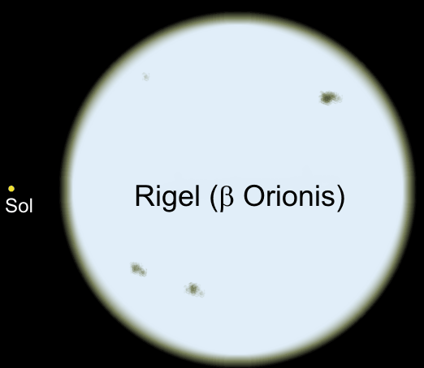
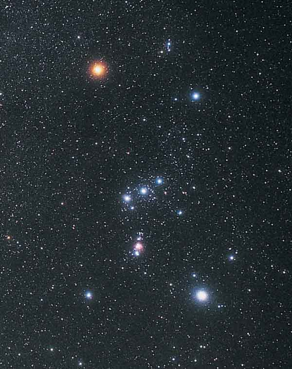

Cea mai strãlucitoare stea din aceastã constelaþie este Rigel, "piciorul stâng" al vânãtorului. Totuºi, ea a fost catalogatã folosind numele Beta Orionis, deoarece la acea vreme Betelgeuse, o stea variabilã, era mai strãlucitoare. Rigel este a ºaptea stea ca strãlucire de pe cerul nocturn, fiind o supergigantã albastrã.

| Orion | |
|---|---|
| Denumire | |
| Nume latin | Orion |
| Genitiv | Orionis |
| Obseratie | |
| (Epoca J2000.0) | |
| Ascesiune dreapta | Intre 4h 43m 25s si |
| 6h 25m 47s | |
| Declinatie | Intre -10o 58, 43,, si |
| +22o 52, 35,, | |
| Suprafata | 594 grd2(Locul 26) |
| Vizibilitate | Intre 85o N si 75o S |
| Trecere la meridian | 25 ianuarie, 21h00 |
| Stele | |
| Stralucitoare (m<=3,0) | 8 |
| Vizibile cu ochiul liber | 206 |
| Bayer/ Flamsteed | 81 |
| Apropiate (d<=16 al) | 2 |
| Cea mai stralucitoare | Rigel( &beta Ori)(0,12)m |
| Cea mai apropiata | GJ 3379(17,51 al) |
| Obiecte | Obiecte Messier | 3(M42, M43, M78) | Ploi de meteori | Chi Orionidele | Constelatii invecinate |
|
